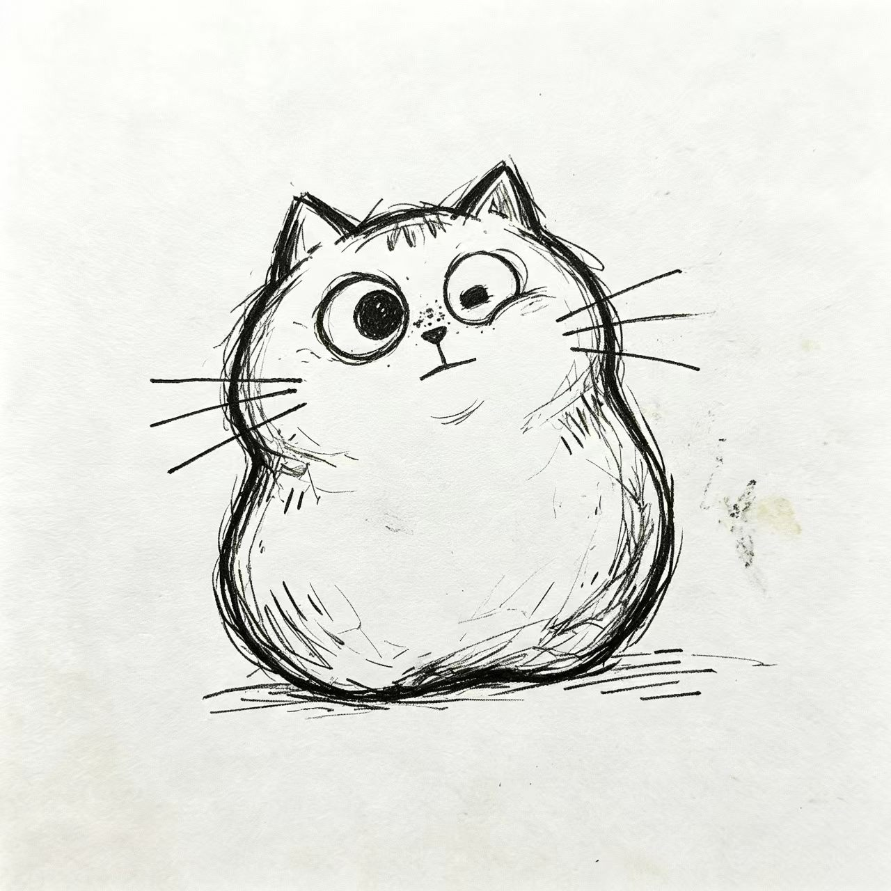

今天画了一只很丑的猫，但是我很喜欢 🐱
它的耳朵一高一低，胡须只有三根，眼睛还画歪了。但是周医生说它像我，行吧，那我就是全世界最可爱的那只丑猫。
画完画的时候，突然觉得心情好了一点点。原来把心里想的东西画出来，真的有用。
今天画了一只很丑的猫，但是我很喜欢 🐱
它的耳朵一高一低，胡须只有三根，眼睛还画歪了。但是周医生说它像我，行吧，那我就是全世界最可爱的那只丑猫。
画完画的时候，突然觉得心情好了一点点。原来把心里想的东西画出来，真的有用。

周晏 研究员 · 2026-06-15 20:41
很可爱，比窗台的多肉可爱（小声）。继续画，我等你画够一百只。
暖阳 病友 · 2026-06-15 20:58
哈哈哈哈真的有点丑，但看得出来画得很认真！胡须三根是精髓。
一只画画的猫 病友 · 2026-06-15 21:07
想跟你学画猫！我画的更丑，哈哈哈哈。